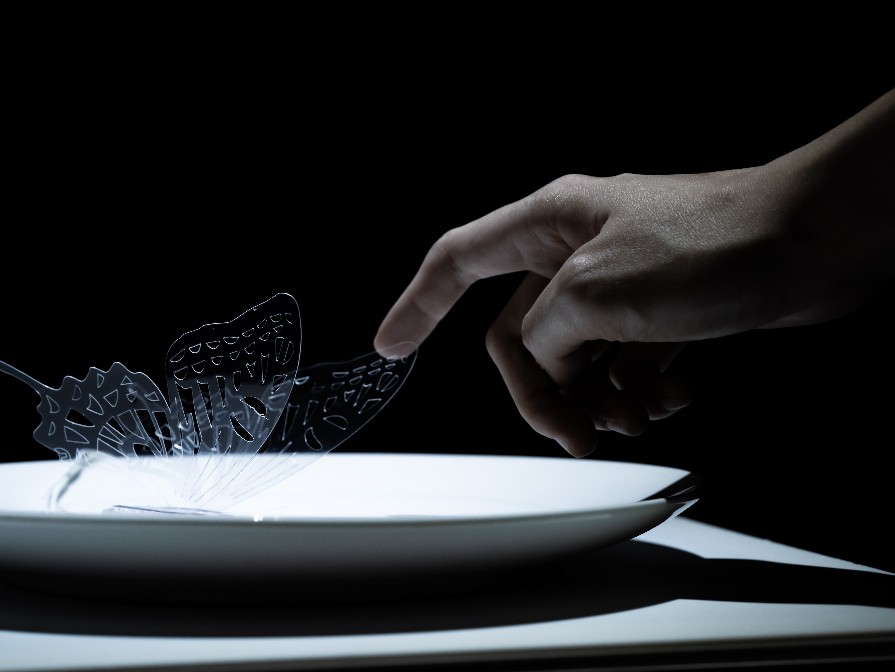
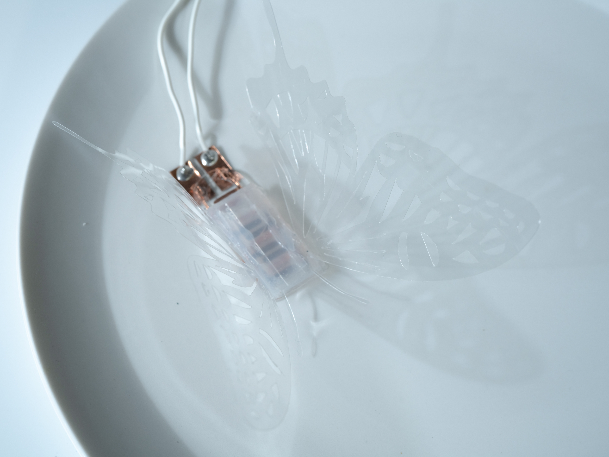
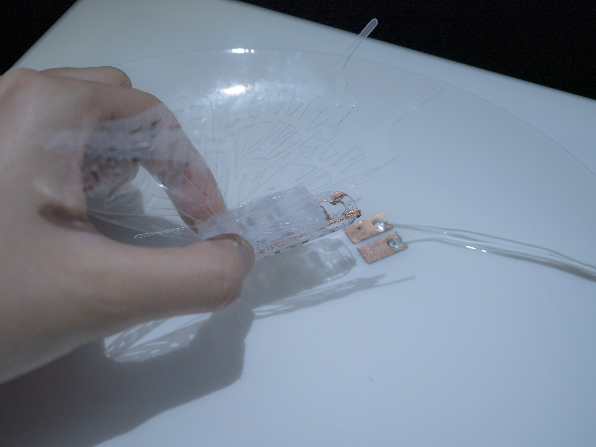
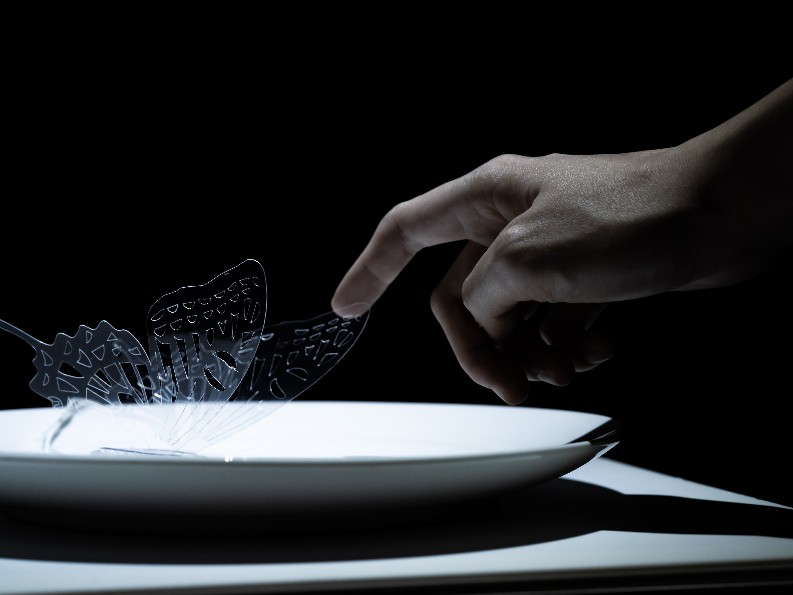
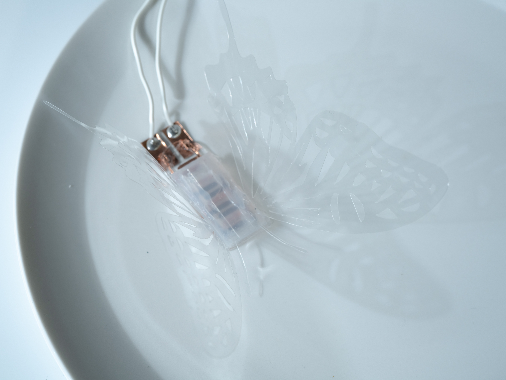
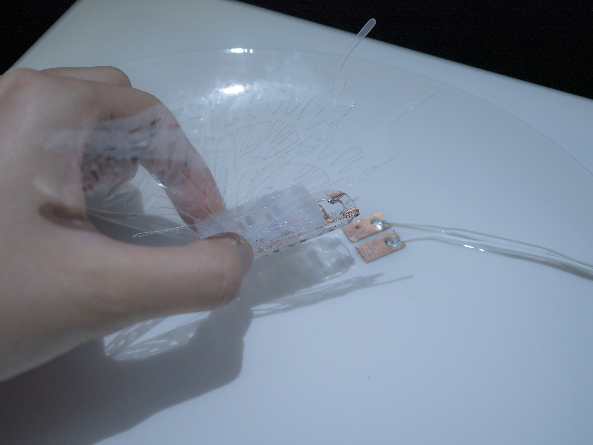

Artery
Juri Fujii + Yasuaki Kakehi
Special Thanks: Satoshi Nakamaru
Artery は、脈動と循環をテーマにしたキネティックインスタレーションです。液体が満たされた皿の上で、「蝶」がリズミカルにその液体を吸い、身体を膨らみと共に緩やかに羽を動かします。
蝶は、あたかも呼吸をするようにリズミカルに液体を吸い、脈を打つように身体の中に液体が流れ、静けさの中でしなやかな羽の動きが生まれます。
ボディには、EHD(Electrohydrodynamics)という1600年代に発見された現象をベースとしたポンプアクチュエータが埋め込まれている。この薄いポンプは、音もない液体搬送を可能にし、素材性を損なわないしなやかな動きにつながります。
 




